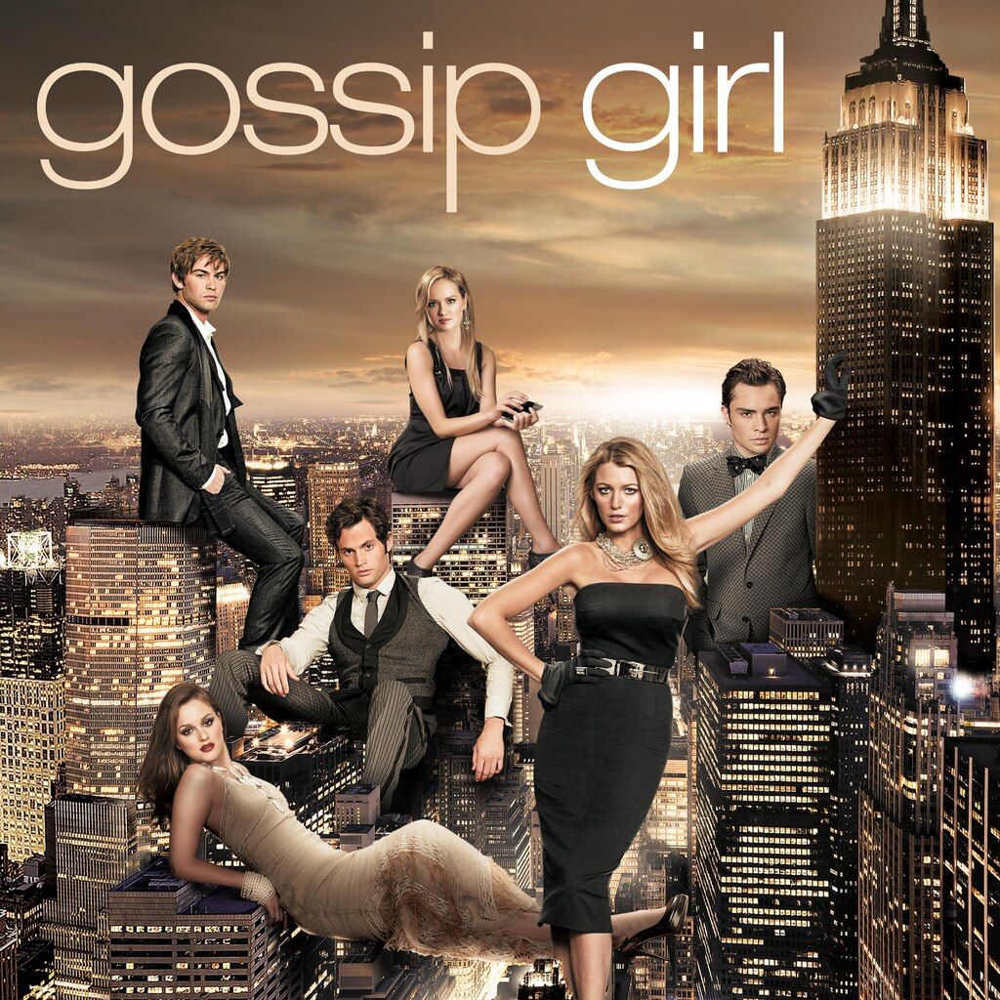
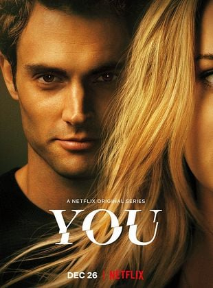
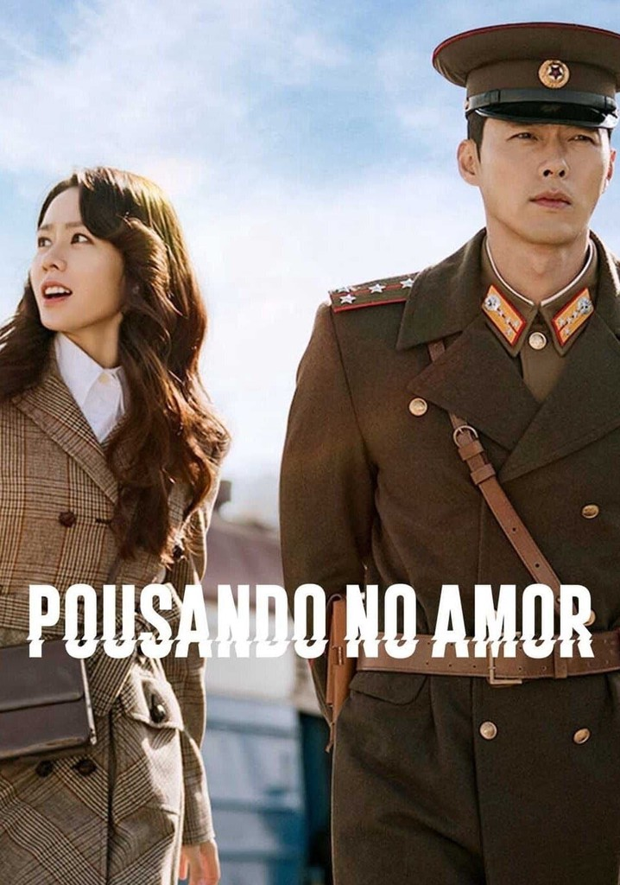
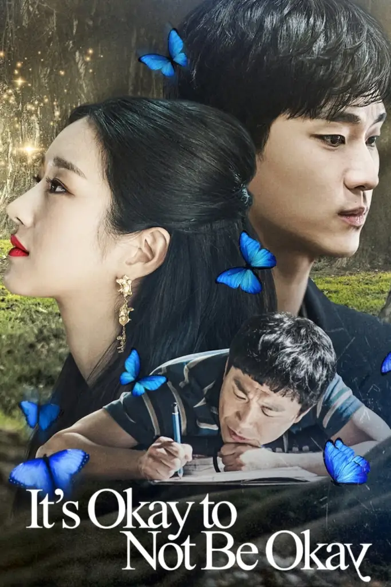
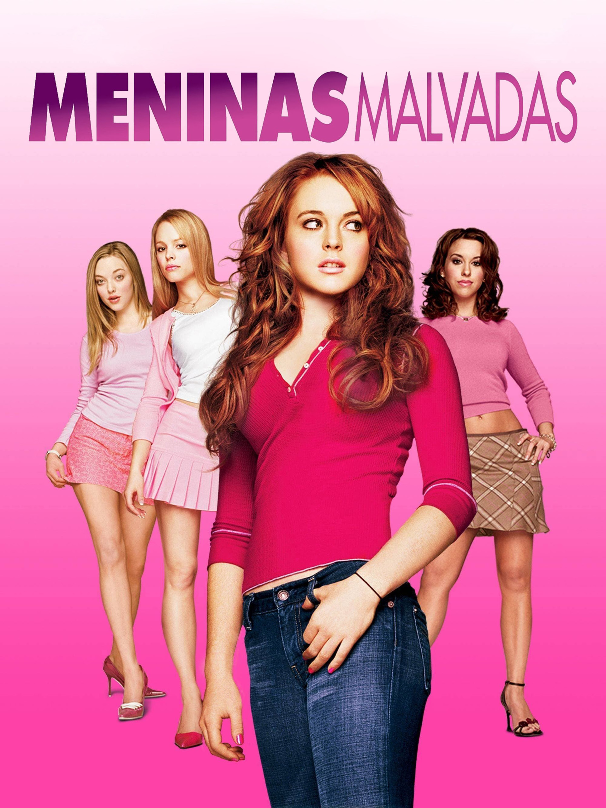

- Gossip Girl🖤

No coração do Upper East Side, jovens ricos e privilegiados vivem entre festas luxuosas,romances proibidos e rivalidades intensas. Mas nada passa despercebido pelos olhos da Gossip Girl, a misteriosa blogueira que revela todos os segredos mais íntimos dessa elite. Os personagens centrais incluem Serena van der Woodsen, a it-girl carismática; Blair Waldorf, sua melhor amiga e também rival; Dan Humphrey, o garoto de classe média que tenta se inserir no mundo da elite; além de Chuck Bass e Nate Archibald, que completam o círculo principal. Ao longo das temporadas, o enredo mistura drama, romance, intrigas e traições, mostrando as consequências de viver sob os holofotes da alta sociedade e do olhar constante da Gossip Girl.
- You💔

A história da série You gira em torno de Joe Goldberg, um homem com um comportamento obsessivo e perigoso que, ao se apaixonar por uma mulher, utiliza a internet e as redes sociais para rastrear cada passo dela, manipulando circunstâncias e eliminando qualquer pessoa que ele considere uma ameaça ao seu "relacionamento ideal". A trama se desenvolve com as consequências dessas ações, a escalada de violência e a busca por novos amores, sempre com Joe se convencendo de que suas ações são justificadas, enquanto as vítimas tentam escapar de sua influência.
- Pousando no Amor💌

A trama gira em torno de Yoon Se-ri, uma herdeira sul-coreana de uma grande empresa, independente e ambiciosa. Durante um acidente de parapente, ela é levada por uma forte tempestade e acaba atravessando a fronteira, aterrissando na Coreia do Norte. Lá, ela conhece Ri Jeong-hyeok, um oficial norte-coreano sério, íntegro e filho de uma família poderosa do regime. Mesmo colocando sua própria vida em risco, ele decide protegê-la e ajudá-la a voltar para casa. O que começa como um encontro improvável se transforma em um romance intenso, cheio de obstáculos políticos, diferenças culturais e perigos constantes.
- Tudo Bem Não Ser Normal🤍

A trama acompanha Moon Gang-tae, um cuidador de saúde mental que dedica a vida a cuidar do irmão mais velho autista, Moon Sang-tae, após um trauma de infância. Sempre colocando as necessidades dos outros acima das suas, Gang-tae vive sobrecarregado e sem espaço para si mesmo. Do outro lado está Ko Mun-yeong, uma famosa escritora de livros infantis com personalidade excêntrica, fria e aparentemente insensível, marcada por feridas emocionais profundas. O destino dos dois se cruza quando ela se interessa por Gang-tae e, a partir desse encontro, ambos começam um processo de cura emocional.
- Friends🫶

A série gira em torno de seis amigos adultos vivendo em Nova York, mostrando como eles lidam com relacionamentos, trabalho, família e desafios pessoais enquanto se apoiam mutuamente. Cada personagem tem uma personalidade distinta que cria muitas situações engraçadas e emocionantes. O enredo combina comédia e drama leve, mostrando momentos do cotidiano, romances complicados, amizades profundas e desafios pessoais, sempre com um toque de humor. A série acompanha os amigos crescendo juntos, aprendendo sobre si mesmos e fortalecendo laços de amizade que duram toda a vida.
- Velozes e Furiosos🏎️

A franquia Velozes & Furiosos gira em torno de Velocidade, ação e família, começando com corridas de rua ilegais e evoluindo para grandes missões globais cheias de espionagem, roubo e combate ao crime. O enredo acompanha principalmente Dominic Toretto, um piloto habilidoso e líder carismático, e Brian O’Conner, policial infiltrado que se torna parte da “família” de Dom. Ao longo dos filmes, eles enfrentam vilões poderosos, resgatam amigos e enfrentam desafios impossíveis, sempre com carros potentes, perseguições emocionantes e efeitos de tirar o fôlego. Além de corridas de rua e adrenalina, a saga destaca laços de amizade e lealdade, reforçando a ideia de que a verdadeira força está na família, seja de sangue ou escolhida.
- As Patricinhas de Beverly Hills🛍️

O filme acompanha Cher Horowitz, uma adolescente rica, popular e fashionista de Beverly Hills, que adora fazer boas ações — ou pelo menos acha que faz. Entre compras, festas e aulas, Cher decide dar um “upgrade” na vida de seus colegas, ajudando-os com conselhos de moda, relacionamentos e autoestima. No caminho, ela percebe que nem tudo pode ser controlado, aprende sobre amor verdadeiro, amizade e autoconhecimento e descobre que crescer às vezes significa perceber seus próprios erros. Com humor, estilo e referências à cultura adolescente dos anos 90, o filme mistura romance, comédia e críticas leves à superficialidade da alta sociedade.
- Meninas Malvadas💗

O filme acompanha Cady Heron, uma adolescente que cresceu estudando em casa na África e, ao se mudar para os Estados Unidos, enfrenta pela primeira vez o mundo do ensino médio americano. Ela rapidamente se envolve com o grupo popular chamado “Plastics”, liderado por Regina George, a típica garota rica, manipuladora e influente da escola. Entre festas, fofocas e disputas de popularidade, Cady descobre os efeitos da vaidade, inveja e crueldade social e aprende, muitas vezes de forma engraçada e dolorosa, sobre amizade verdadeira, autoconfiança e empatia.
- Gente Grande🏀

O filme acompanha Lenny Feder, um homem bem-sucedido, e seus antigos amigos de infância que se reencontram após muitos anos para passar um fim de semana juntos, celebrando a amizade e lembrando os velhos tempos. Entre brincadeiras, competições esportivas, aventuras hilárias e situações inesperadas, eles relembram como eram quando crianças, enfrentam diferenças que surgiram com a idade e redescobrem a importância da amizade verdadeira. O filme mistura comédia, família e nostalgia, mostrando que, mesmo crescidos, os laços de amizade e a diversão nunca desaparecem completamente.
- O Diabo Veste Prada🎀
O filme acompanha Andrea “Andy” Sachs, uma jovem recém-formada em jornalismo que consegue um emprego como assistente da poderosa e temida editora de moda Miranda Priestly, chefe da revista Runway. Andy entra em um mundo glamouroso e exigente, cheio de alta moda, prazos impossíveis e desafios profissionais. À medida que ela tenta se encaixar nesse universo de luxo e perfeição, Andy percebe que está perdendo sua identidade e precisará decidir entre sucesso profissional e seus valores pessoais.